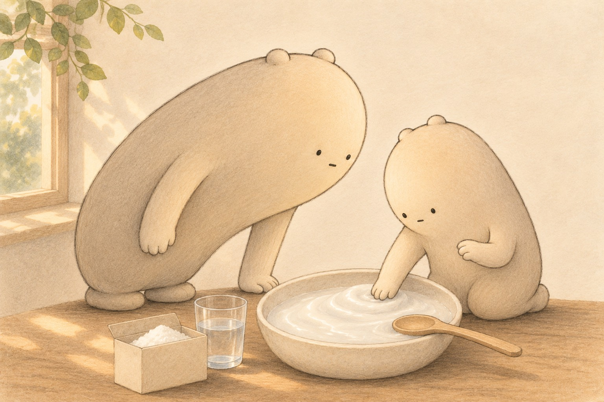
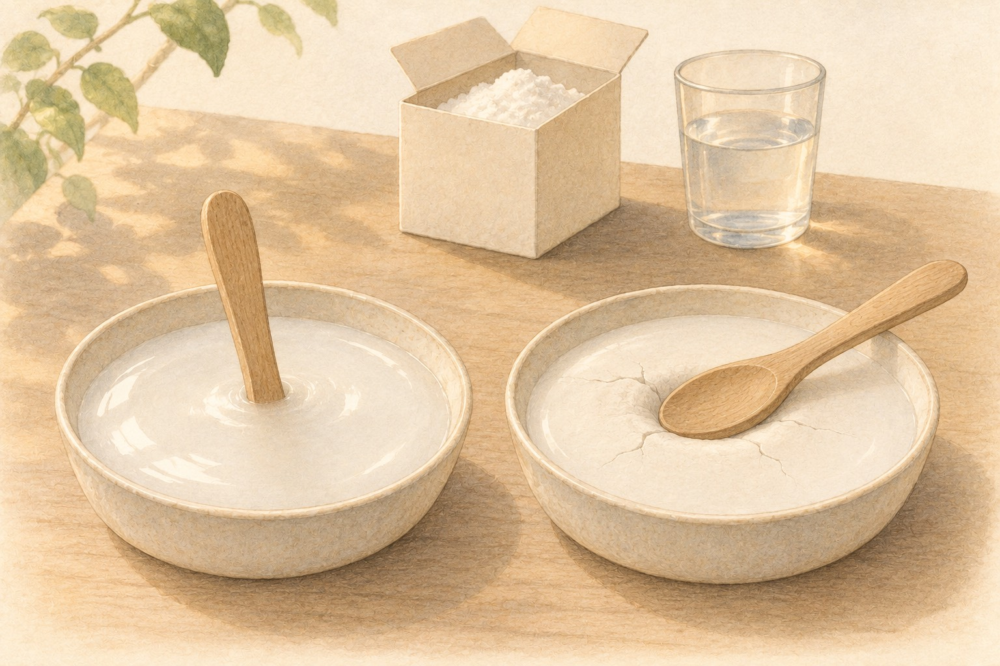
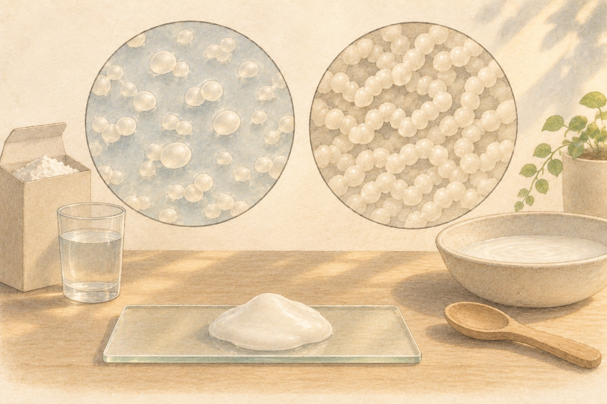
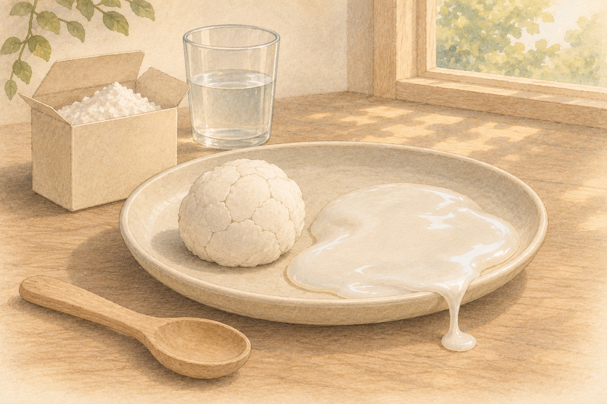
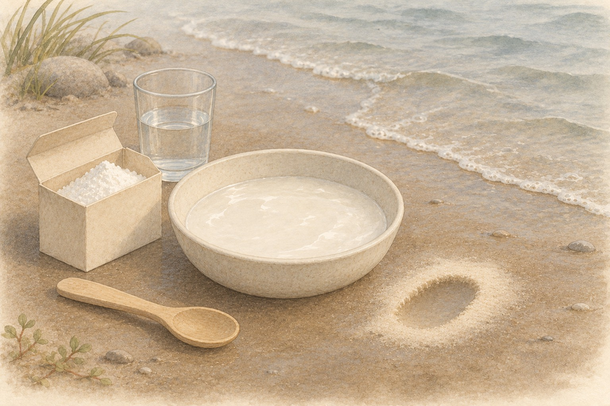
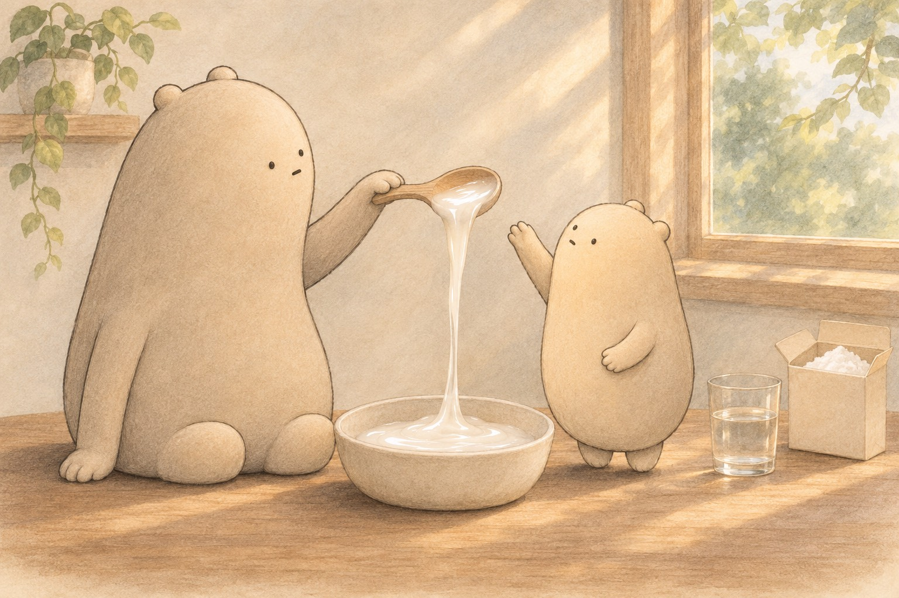

How can one bowl of goo swallow a slow mitten but stop a fast tap?

Where shall we look?

Slow sinks deep; a fast smack holds.
Why does a fast smack stop at the top?
Compare the deep, sunk spoon with the dull dent in the other bowl.
A little explanation & something to try
Most liquids, like water, stay just as runny however fast you push. Isaac Newton described that rule, so this goo is called non-Newtonian. A slow push lets it flow. A fast smack makes it act like a solid for a moment.
Try this. Mix about 2 scoops of cornstarch with 1 scoop of water. Rest a spoon on top, then tap the goo fast with another. Which one sinks?

Slow pushes let grains slide. Fast pushes jam them.
What happens to the grains when you push fast?
Find the grains floating apart and the grains crowded into chains.
A little explanation & something to try
Each cornstarch grain is so tiny that about five fit across one hair. Water sits between them like a slippery layer. A slow push lets the water slip aside. A fast push shoves the grains together before the water can move, so they lock up. Scientists call this jamming.
Try this. Drag a spoon slowly through the goo, then quickly. Feel how much harder your arm has to work.

Squeezed goo looks dry, then melts.
Why does squeezed goo look dry?
Look at the dull, cracked skin of the ball and the shiny puddle beside it.
A little explanation & something to try
Jammed grains need a little more room, so they poke up through the water at the surface. The skin turns dull and cracks. Stop squeezing, and the water covers them again, so the goo shines and melts.
Try this. Roll a lump of goo between your palms, then stop and open your hands. Watch it melt and drip.

A step makes wet sand look dry for a moment.
Why does wet sand go pale around a foot?
Find the pale ring around the press mark in the wet sand.
A little explanation & something to try
A step pushes the sand grains a little apart. Water sinks into the new gaps, so the top looks dry for a moment. Osborne Reynolds explained this in 1885 and named it dilatancy. Cornstarch goo does a quick version of the same trick.
Try this. Next time you are at a beach, step on firm wet sand. Watch the pale ring appear, then lift your foot.
Goo counts
Add and subtract counts of spoonfuls, grains, cracks and footprints.
Slow sinks deep; a fast smack holds.
Choose one problem and draw the tens as sticks and the ones as dots to check.
1.Little Wonderer pours 46 spoonfuls of powder, then 27 more. How many spoonfuls in all?
46 + 27 =
A small hint
Add the ones, then the tens. Trade 10 ones for 1 ten if needed.
2.A resting spoon sinks 52 millimetres, but a smacked spoon sinks only 18. How much deeper is the resting spoon?
52 − 18 =
A small hint
Trade 1 ten for 10 ones if needed, then subtract the ones and tens.
3.A drawing shows 38 sliding grains and 45 jammed grains. How many grains in all?
38 + 45 =
A small hint
Add the ones, then the tens. Trade 10 ones for 1 ten if needed.
4.A squeezed ball shows 63 tiny cracks, and 28 melt away first. How many cracks are left?
63 − 28 =
A small hint
Trade 1 ten for 10 ones if needed, then subtract the ones and tens.
5.Big Wonderer counts 19 slow drips, and the little one counts 24. How many drips in all?
19 + 24 =
A small hint
Add the ones, then the tens. Trade 10 ones for 1 ten if needed.
6.A beach shows 72 footprints, and waves wash away 36. How many footprints are left?
72 − 36 =
A small hint
Trade 1 ten for 10 ones if needed, then subtract the ones and tens.
One goo, two ways
Cornstarch Goo
Soft, then hard
Little Wonderer stirs white powder into a bowl of water. The goo looks runny, like milk. A slow mitten sinks right in. Then the little one taps it fast. Tap! Now it feels as hard as a table. Big Wonderer leans in to look. How can one bowl be soft and hard?
What happens when the little one taps the goo fast?
Slow sinks, fast stops
Try two spoons. Rest one spoon on the goo and wait. It sinks slowly to the bottom. Now smack the goo with the other spoon. It stops at the top and leaves a dull dent! Most liquids act the same, fast or slow. Water does, and so does honey. This goo breaks that rule, so it is called non-Newtonian.
How is the goo different from water?
Grains in a crowd
Cornstarch is made of tiny grains. About five could sit across one hair. In the goo, thin water sits between them. Push slowly, and the water slips aside. The grains slide past like skaters. Push fast, and the water cannot move in time. The grains crash together and lock into chains. That is called jamming.
Why do the grains jam when you push fast?
Dry, then shiny
Here is a clue. Squeeze a ball of goo, and its skin turns dull and cracked. It looks almost dry! Jammed grains need a little more room, so they poke up through the water. Stop squeezing, and the grains settle back. The water covers them again, and the ball melts into a shiny puddle.
Why does the squeezed ball look dry?

A slow ribbon
Back at the table, Big Wonderer lifts a spoonful. A slow ribbon drips back into the bowl. Little Wonderer reaches up to it. Now the guess changes. The goo is not two things. It is one crowd of grains in water. Gentle pushes let them slide. Quick pushes jam them, and then the jam melts away.
How does the guess about the goo change?
Pale sand by the sea
Wet sand at the beach plays a cousin of this trick. Step on firm, wet sand, and it turns pale around your foot. Your step pushes the grains apart, so water sinks into the new gaps. Osborne Reynolds explained it in 1885. People have even run across a pool of goo. If they stop, they sink. How long can a jam last?